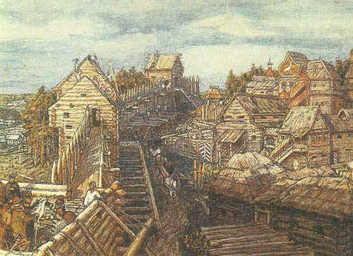
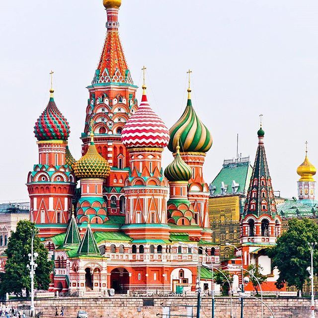
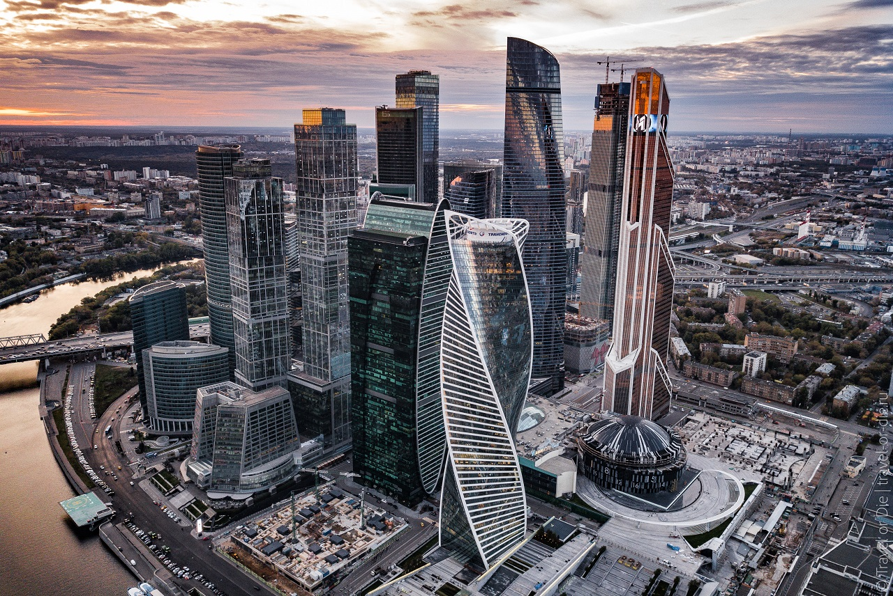
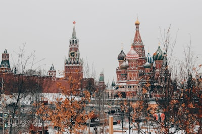
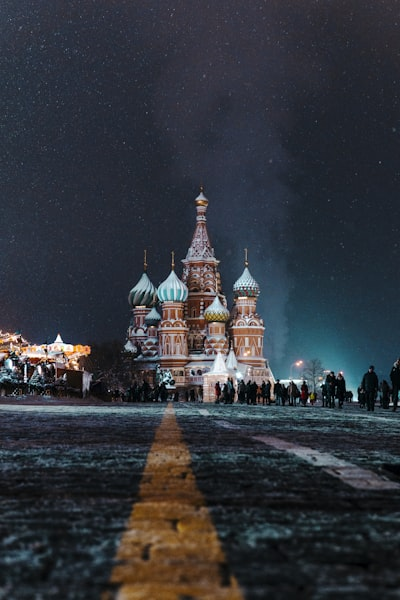
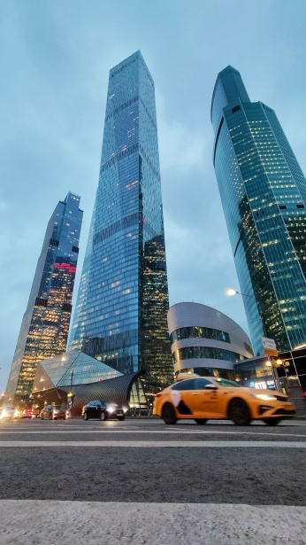
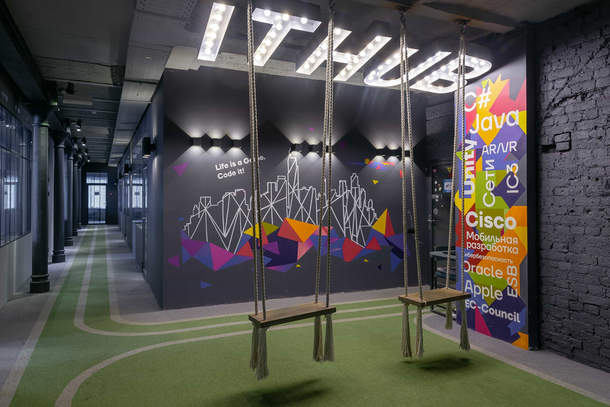
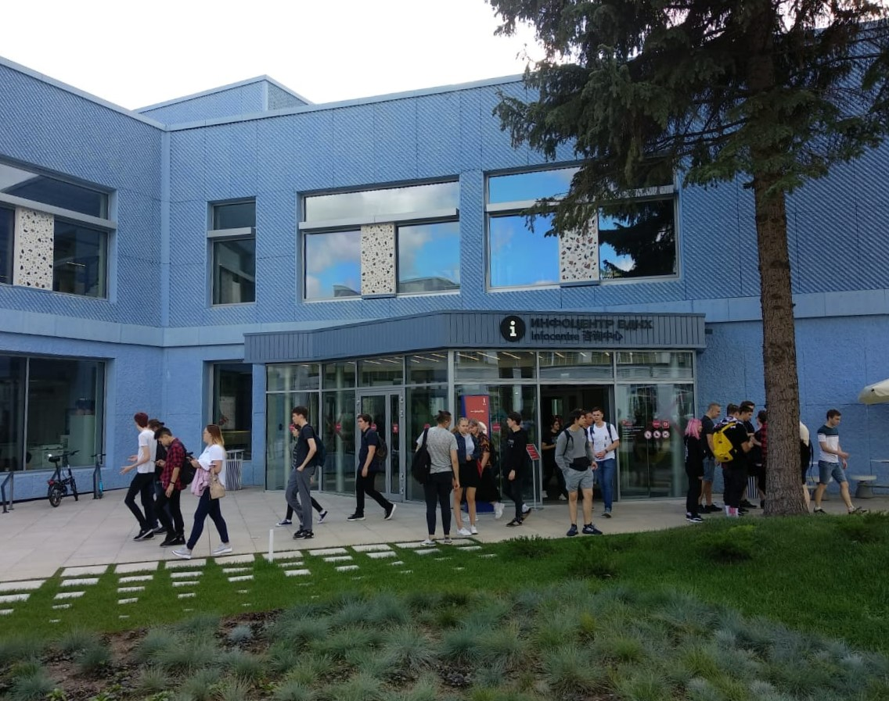
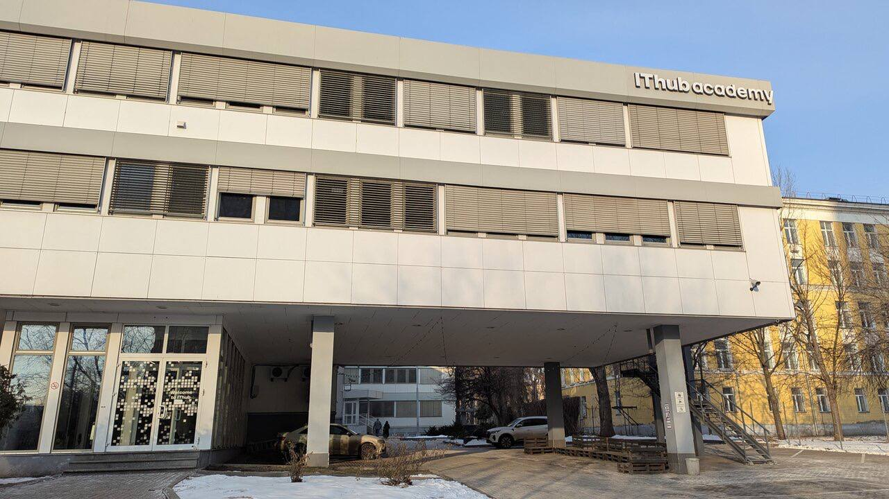

Сердце России
Узнать большеИстория Москвы

1147: Начало пути
Первое письменное упоминание Москвы датируется 4 апреля 1147 года. Об этом сообщает Ипатьевская летопись: в этот день ростово-суздальский князь Юрий Долгорукий встретился в «поселении Москов» со своим союзником князем Святославом Ольговичем. Именно от этой даты российская историческая наука ведёт отсчёт истории города.

1555 - 1561: Златоглавая
Собор Покрова Пресвятой Богородицы (известный как Храм Василия Блаженного) был возведён в честь взятия Казани и освящён 29 июня 1561 года. Его строительство велось в 1555–1561 годах по указу царя Ивана IV Грозного. Именно 29 июня 1561 года, по найденной «летописи» на стенах храма, датировано полное завершение стройки.

Сегодня: Мегаполис
Сегодня Москва — крупнейший город России и один из самых крупных мегаполисов мира. По данным властей, к январю 2025 года её население достигло 13,3 млн человек. Столица сочетает в себе исторические традиции и технологические новшества: на компактной территории рядом с древними памятниками (Кремлёвские стены, храмы, исторические кварталы) выросли ультрасовременные небоскрёбы.
Москва в цифрах
Жителей — самый населенный город Европы
Лет со дня основания
В России по IT-технологиям
Музеев и галерей
«Москва — это город, который никогда не спит, объединяя в себе энергию будущего и величие прошлого»
Интерактивные локации

Кремль
Главная крепость страны. Здесь принимаются важнейшие решения.

Храм Василия Блаженного
Архитектурный шедевр XVI века, ставший символом всей России.

Москва-Сити
Современный деловой квартал с самыми высокими небоскребами Европы.
Филиалы IThub

Флагманский кампус в центре. 5 этажей технологий и дизайна.

Уютный кампус рядом с ВДНХ. Идеально для глубокого кодинга.

Инновационная точка с акцентом на GameDev и киберспорт.
Отзывы студентов
Алиса Резниченко
Студентка IThub
Наведи, чтобы прочитать"Проучилась половину первого курса. Понравилось само помещение — чисто, без запаха сигарет, есть отдельные места для курения. В столовой вкусная еда. Вход по пропускам, что добавляет безопасности. Хорошее оснащение: современные компьютеры, в некоторых кабинетах — Mac, есть 3D-принтеры, электронные доски и стилусы. Записываются уроки, что удобно при пропусках. Преподаватели в основном объясняют понятно и спокойно."